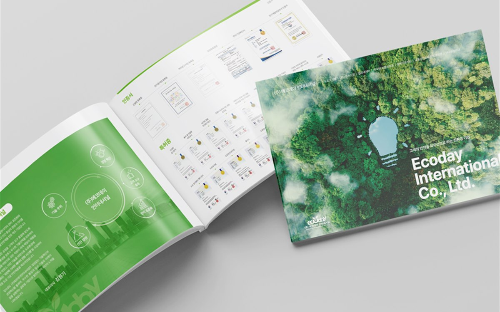

핵심 요약
① 투자 IR용 회사소개서는 '문제 → 해결 → 시장 → 팀' 순서, 영업용은 '고객의 문제 → 제품 → 도입 효과 → 실적' 순서로 목차가 달라야 합니다.
② 기술 설명은 원리 도해 한 장과 '기존 방식 대비 무엇이 달라지는가' 비교표 하나로 충분하고, 논문 수준의 설명은 부록으로 뺍니다.
③ 8페이지 기본 구성에 국·영문 버전, PDF와 인쇄본을 같은 마스터에서 만들면 IR 행사와 영업 미팅에 모두 대응할 수 있습니다.
안녕하세요, 퍼스트디자인 대전지사입니다. 대덕특구의 연구소기업과 기술 스타트업은 창업 1~2년 차에 회사소개서를 처음 만듭니다. 투자 유치 행사에도 쓰고, 고객사 영업 미팅에도 쓰고, 지원사업 신청서에도 붙이려다 보니 한 권에 모든 것을 넣게 됩니다. 결과는 투자자에게는 제품 설명이 길고, 고객에게는 재무 이야기가 낯선 소개서입니다. 오늘은 용도별로 무엇이 달라야 하는지 정리해 드리겠습니다.
IR용과 영업용 회사소개서는 목차부터 다를까?
네, 읽는 사람이 궁금해하는 순서가 다르기 때문입니다. 투자자는 '이 팀이 큰 시장의 문제를 풀 수 있는가'를 보고, 고객은 '이 제품이 내 문제를 지금 해결해 주는가'를 봅니다. 저희가 잡는 기본 목차는 아래와 같습니다.
| 순서 | 투자 IR용 | 영업용 |
| 1 | 시장의 문제와 규모 | 고객이 겪는 문제 |
| 2 | 해결 방식과 핵심 기술 | 제품 · 서비스와 작동 원리 |
| 3 | 사업 모델과 성장 지표 | 도입 효과 · 비교표 |
| 4 | 팀 · 투자 이력 · 계획 | 실적 · 인증 · 도입 절차 · 연락처 |
두 버전을 따로 만들면 비용이 두 배가 될 것 같지만, 실제로는 같은 마스터와 같은 도해를 쓰고 순서와 강조만 바꾸는 작업이라 추가 비용은 크지 않습니다.

기술을 비전공자에게 어떻게 설명해야 할까?
연구소기업 소개서에서 가장 자주 보는 실수는 논문의 그림을 그대로 붙이는 것입니다. 투자 심사역과 고객사 구매 담당자는 대부분 비전공자입니다. 저희는 기술 설명을 두 장으로 압축합니다. 한 장은 '입력 → 처리 → 결과'가 보이는 원리 도해, 다른 한 장은 '기존 방식 대비 무엇이 달라지는가'를 시간·비용·정확도 같은 숫자로 비교한 표입니다. 논문 수준의 설명이 필요하면 부록이나 별도 기술 자료로 뺍니다.
도해는 회사 색 하나와 회색만으로 그리고, 화살표 방향과 박스 모양을 통일합니다. 화려한 3D 그림보다 단순한 흐름도가 훨씬 빨리 읽힙니다.
8페이지 회사소개서에는 무엇이 들어갈까?
스타트업 회사소개서의 표준은 8페이지입니다. 표지, 회사 한 줄 소개와 핵심 숫자, 문제, 해결, 기술 도해, 실적·고객사, 팀, 연락처 순서입니다. 8페이지는 중철 제본으로 얇게 만들 수 있고, PDF로 보내도 한 번에 읽히는 분량입니다. 내용이 늘어나면 12페이지까지는 괜찮지만 그 이상은 카탈로그나 기술 자료로 나누는 편이 좋습니다.
영문판은 해외 투자자와 바이어 미팅에 필수입니다. 자체 번역 부서가 국문판 확정 후 1주 안에 영문판을 조판하고, 같은 마스터에서 PDF·인쇄본·발표용 슬라이드를 함께 뽑아 드립니다.
지원사업 신청과 IR 행사 일정은 어떻게 맞출까?
대전에는 연구소기업 등록, 창업 지원사업, 투자 유치 행사가 연중 이어집니다. 회사소개서는 이 일정의 2주 전에는 완성되어 있어야 합니다. 저희는 첫 미팅에서 앞으로 3개월 안에 예정된 행사와 제출 일정을 함께 정리하고, 가장 이른 일정을 기준으로 초안 시점을 잡습니다. 초안은 표지와 문제·해결 4페이지를 먼저 보여드리고 방향을 확정한 뒤 나머지를 완성합니다.
자주 묻는 질문
Q. 대덕특구 연구소기업인데 아직 매출이 없습니다. 실적 페이지는 어떻게 채우나요?
A. 매출 대신 특허, 인증, 시제품 검증 결과, 협력 기관, 수상 이력을 실적으로 정리합니다. 투자 IR용이면 성장 지표 대신 개발 로드맵을 넣습니다.
Q. 회사소개서 제작 기간은 얼마나 걸리나요?
A. 8페이지 기준으로 원고 정리 3일, 디자인 1주, 수정 3일로 2~3주 정도입니다. 영문판은 1주가 더 필요합니다.
Q. 로고가 아직 없는데 같이 만들 수 있나요?
A. 네. 로고·명함·회사소개서를 창업 패키지로 묶어 진행하면 톤이 통일되고 비용도 줄어듭니다.
Q. 인쇄는 몇 부 정도가 적당한가요?
A. 초기에는 50~100부를 디지털 인쇄로 준비하고, 내용이 안정된 뒤 옵셋으로 늘리는 방식을 권합니다. 대부분의 미팅은 PDF로 먼저 오가기 때문에 인쇄 수량은 적게 시작해도 됩니다.
퍼스트디자인 대전지사
대덕연구단지와 정부대전청사, 세종·청주·공주 충청권의 연구기관·바이오 기업·공공기관·제조기업 홍보물을 전담합니다. 기획·디자인·번역·촬영·인쇄를 한 팀에서 처리하고, 자체 인쇄소에서 소량 디지털 인쇄부터 대량 옵셋 인쇄까지 직접 진행합니다. 초안을 먼저 확인받고 진행하는 방식으로 12년간 3,200건 이상을 납품했습니다.
- 12년+편집 디자인 경력
- 3,200+납품 프로젝트
- 98%재의뢰 · 소개
- 400+정부지원사업 수행
대덕특구·유성구 연구소기업과 스타트업의 회사소개서, IR 자료, 영문 소개서 제작이 필요하시면 예정된 행사 일정과 함께 문의해 주세요. 목차 설계부터 인쇄까지 한 팀이 진행합니다. 상담은 1600-9487(평일 09:00~18:00) 또는 work@firstmkt.co.kr로 문의해 주세요. 대전·세종·충청권은 직접 방문 미팅도 가능합니다.